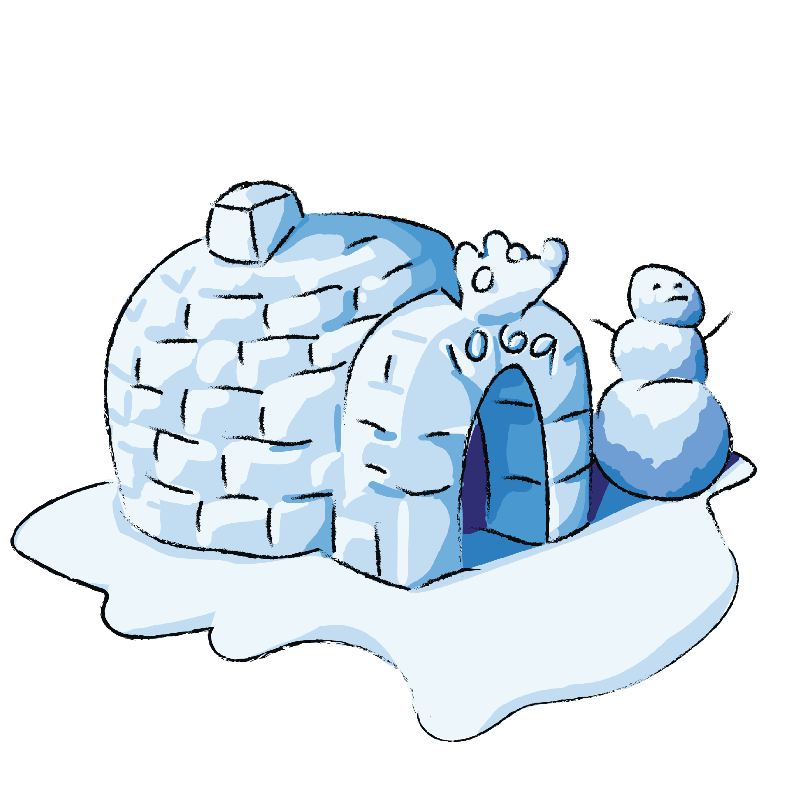
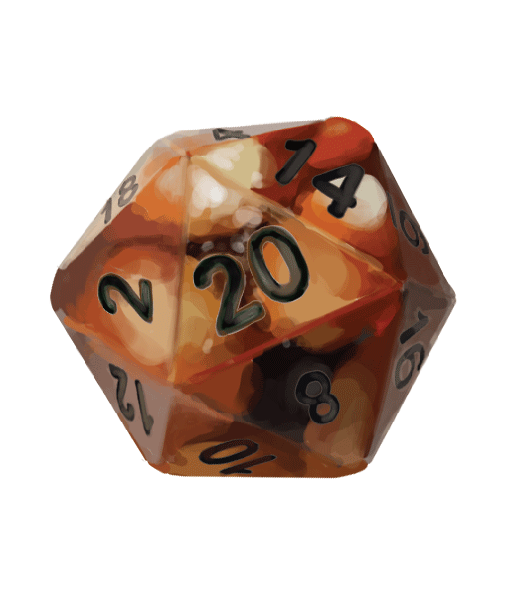
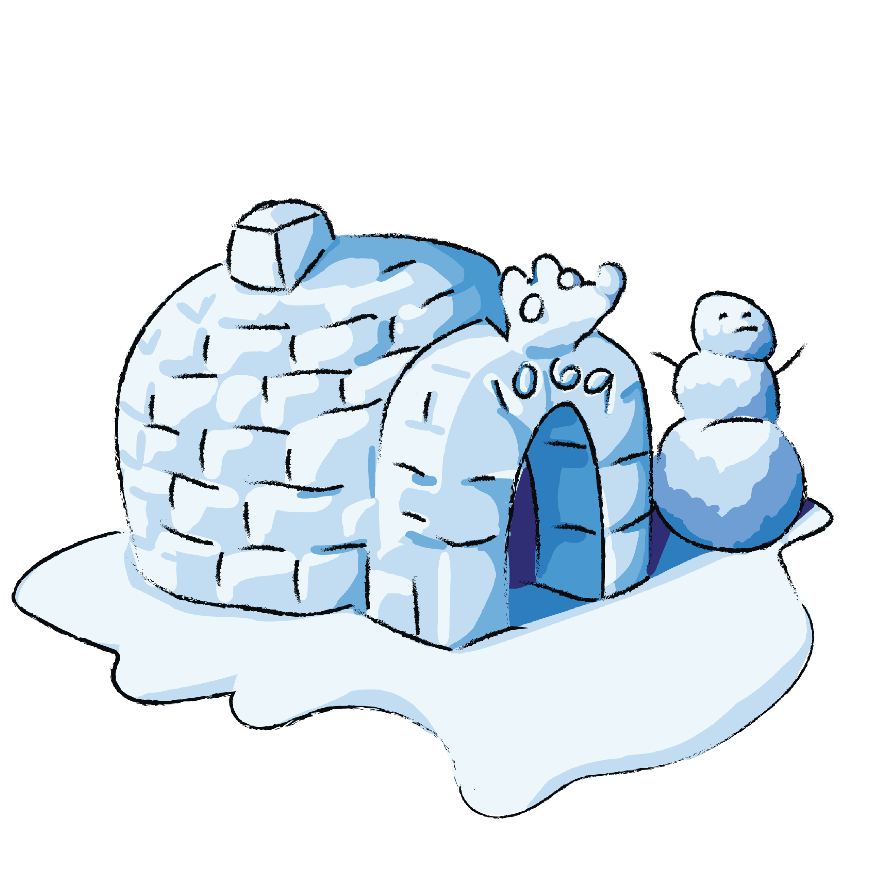
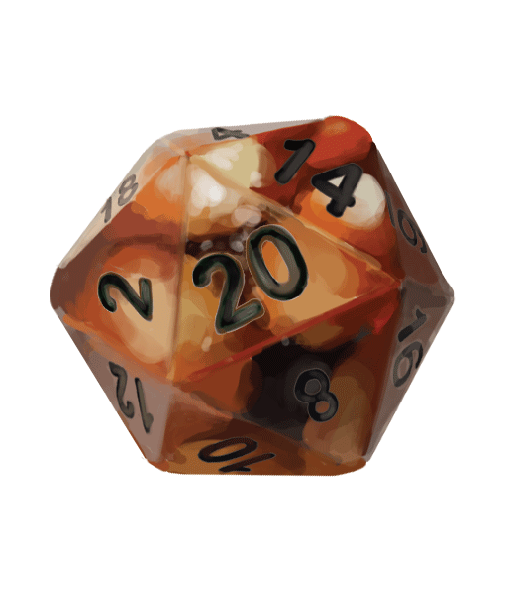
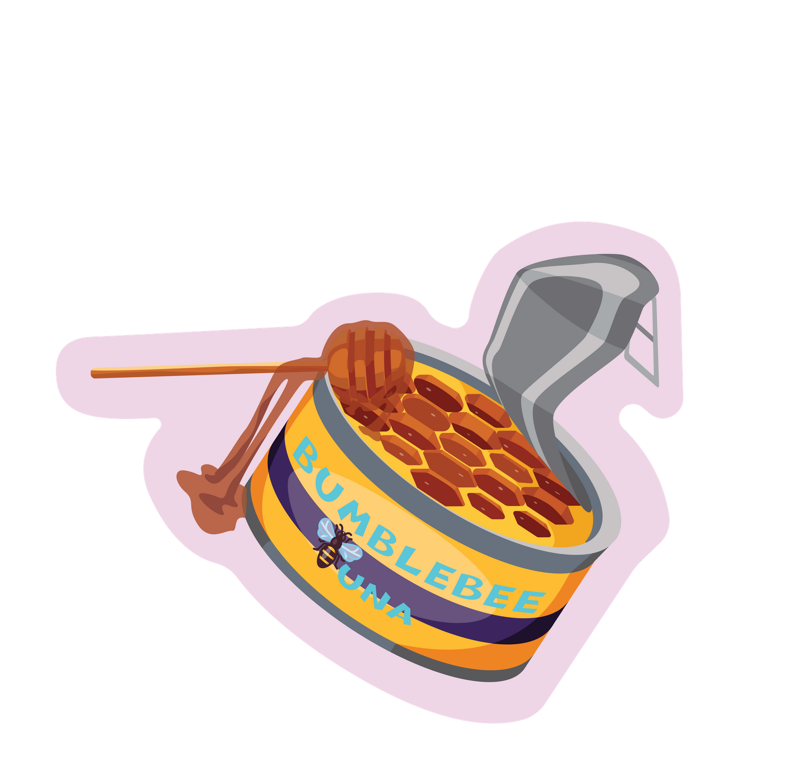

Welcome.
Welcome.
 



I make stickers! I've always loved cute and cool stickers but was always troubled by a lack of accessible vendors (that didn't want me to make a 100-sticker bulk-order) and shipping from online always cost an arm and a leg.
It began as a curiousity sparked by when I found out that our college library had Cricut machines, information about which enabled my endeavor into stickers at all. I was still unsure of how to get started, though. I began first with cute designs; I made them as injokes for my class at Olin College of Engineering, which uniquely has less than 90 members. Being engineering nerds, I made stickers of free-body diagrams, planets, machine shop training pieces, and memes at the expense of our beloved housing director.
So I sauntered into the library after shooting the head librarian an email, popped some freshly-bought-from-Amazon sticker paper into the inkjet printer, and played fiddlesticks with printer drivers, Adobe programs, the Cricut Design Space, and the Cricut machine for fourteen hours until I got my first batch of stickers printed.
I put the stickers out for sale in our class group chat, and immediately sold out. I was flabberghasted, but I guess a going rate of $1 per sticker was pretty good, and they were specific enough that the designs, guaranteed, weren't about to be found anywhere else. I eventually worked through the backlog of sticker orders, and sent them out in little envelopes that I was privvy to thanks to a kind friend. Eventually, when those ran out, I paperclipped sticker orders together with a sticky note with the buyer's name, leaving them for pickup in the dormitory lounge.
The rest, they say, is history. I've been making stickers for the Olin College community since!
Blah blah blah, I hear you thinking, "
how do I make my own?" I hear you ask. Well say less, I've been asked so many times I made my own guide, which is here for your leisure. Click the button for a Google Doc link or just read it below, up to you!
You’ll need sticker paper! Buy some sheets off of Amazon. I recommend getting ones that are waterproof for longevity purposes, and it's up to you if you want matte, gloss, or transparent, but each comes with different optimal print settings, so keep that in mind. If you have a Cricut machine, you're gonna need the Cricut software (Cricut Design Space) installed and ready. Otherwise have a nice pair of craft scissors, an x-acto knife, and patience handy!
I usually design my stickers in Photoshop or Illustrator. If I did it on paper, I do a high quality scan of the illustration and do post processing in Photoshop to clean up noise and add a background. Ideally, you want to take your design and create a solid (usually white) border around it, so that when it's cut out it has some leeway for there to make errors; the Cricut machine is not perfect and if you don’t want to spend a long time calibrating, this room for error is essential. You also want to reduce the amount of curves or edges your border has (without compromising artistic integrity) so it's easier to cut later (a square or circle is much easier to cut than a star).
The easiest way to lay out your stickers for printing is to put whatever designs you want into a Photoshop canvas of appropriate size. Depending on whether you have a Cricut machine readily available to or not this will usually be the size of your sticker paper. If you are using a Cricut machine, the canvas size should be 6.75"x9.25".
Tips:
Then you'll need to print your design. You then need to make sure that your printer is using the correct color transfer. Because printers and computers use different primary colors (CMYK & RGB, respectively) your print could come out super wonky in color if you don't let your computer manage colors to the printer on a CMYK setting. Some printers may have drivers and plugins you may want to install for optimal color management. In Adobe products, putting your canvas setting to CMYK will allow you to view colors in and out of gamut or within the printer's ability to replicate with its inks.
Make sure that your printer is clean. Inkjet printers especially suffer from clogging over time, so you may need to run a cleaning routine, which can be accessed via print controls on your computer. If you're unsure if the printer is clean, print a nozzle check pattern- all inkjets should have this feature in its firmware.
If you're not using a Cricut machine, use a pair of nice craft scissors and patience. After 50 stickers or so your hand will be sore so take breaks (or use your other hand if you're able). If you are using a Cricut machine, you'll need to load your Photoshop layout into the Cricut software.
Then, you'll want to select a material. I recommend the sticky note material, although it is possible to create your own custom material that works better with the sticker paper you've bought. There's no real surefire way to determine if the material setting is appropriate without actually cutting and iterating. Then, you'll want to load up your sheet aligned with any one of the corners of the cutting mat as best you can, load in the mat, and hit ‘cut’ on the Cricut machine. Then watch your machine go! If your machine is cutting way off center, you can print out a calibration sheet if you go to the calibration tab on the Cricut software (left hand side bar in the software). Print this calibration cut out preferably on a laser printer, align it, and cut it as you would any other sheet. The system will prompt you to do what it needs to effectively calibrate.
Misalignment:
If you’re off-put by a misalignment on your design’s cutout, try the following:
Failing Line Detection:
Oftentimes, the line-detection will fail, especially on glossy surfaces. If you encounter this, the most effective method to address the Cricut being unable to find the line properly is to put matte Scotch tape over the black border around your print-then-cut layout. Other methods include: